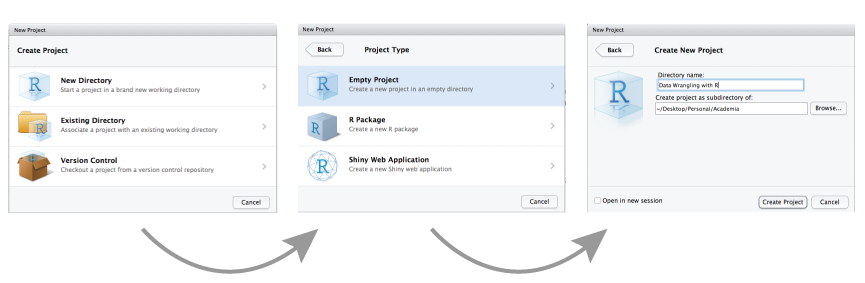
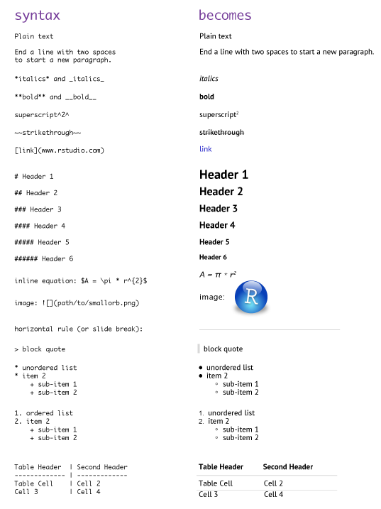
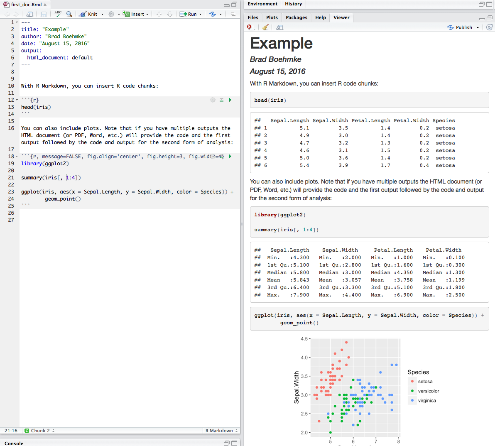

8 Lesson 2a: Workflow
This lesson serves to introduce you to workflow options that will serve to organize your projects and make them reproducible. You’ll learn how to have a project-oriented environment along with how to create R Markdown and Notebook scripts for efficient and reproducible deliverables.
8.1 Learning objectives
Upon completing this module you will be able to:
- Explain the benefits of an R project and new ones.
- Explain the similarities and differences between R Markdown files and R Notebooks.
- Create both R Markdown and R Notebook deliverables.
8.2 R Projects
“Organization is what you do before you do something, so that when you do it, it is not all mixed up.” - A.A. Milne
If you are not careful your data analyses can become an explosion of data files, R scripts, ggplot graphs, and final reports. Each project evolves and mutates in its own way and keeping all the files associated with a project organized together is a wise practice. In fact, it is such a wise practice that RStudio has built-in support to manage your projects. This built-in capability is called…wait for it…RStudio projects. RStudio projects make it straightforward to divide your work into multiple contexts, each with their own working directory, workspace, history, and source documents.
8.2.1 Creating Projects
RStudio projects are associated with R working directories. You can create an RStudio project:
- In a new directory
- In an existing directory where you already have R code and data
- By cloning a version control (Git or Subversion) repository
by selecting File » New Project and then completing the following set-up tasks:

8.2.2 So What’s Different?
When a new project is created RStudio:
- Creates a project file (with an .Rproj extension) within the project directory. This file contains various project options (discussed below) and can also be used as a shortcut for opening the project directly from the filesystem.
- Creates a hidden directory (named .Rproj.user) where project-specific temporary files (e.g. auto-saved source documents, window-state, etc.) are stored. This directory is also automatically added to .Rbuildignore, .gitignore, etc. if required.
- Loads the project into RStudio and display its name in the Projects toolbar (which is located on the far right side of the main toolbar)


When a project is opened (File » Open Project or by clicking on the .Rproj file directly for the project):
- A new R session is started
- The .Rprofile file in the project’s main directory is sourced by R
- The .RData file in the project’s main directory is loaded (if any)
- The history for the project is loaded into the History panel
- The working directory is set to the project’s directory.
- Previously edited source documents are restored into editor tabs
- Other RStudio settings are restored to where they were the last time the project was closed
As you write and execute code in the project all updates and outputs created will be saved to the project directory. And when you close out of the project the .RData and .Rhistory files will be saved (if these options are selected in the global options) and the list of open source documents are saved so that they can be restored the next time you open the project.
There are additional project options you can choose from to customize the project at Tools » Project Options. These project options are overrides for existing global options. To inherit the default global behavior for a project you can specify (Default) as the option value.
8.2.3 Knowledge check
-
Go ahead and create an R Project for this class.
-
Make sure the following RStudio preference settings are set:
- General: Set “Save workspace to .RData on exit: Never”.
- Code: In the display tab check the “Show margin” option and set “Margin Column: 80”.
- Code >> Diagnostics: Make sure the “Provide R style diagnostics” is checked.
8.3 R Markdown
R Markdown provides an easy way to produce a rich, fully-documented reproducible analysis. It allows the user to share a single file that contains all of the prose, code, and metadata needed to reproduce the analysis from beginning to end. R Markdown allows for “chunks” of R code to be included along with Markdown text to produce a nicely formatted HTML, PDF, or Word file without having to know any HTML or LaTeX code or have to fuss with difficult formatting issues. One R Markdown file can generate a variety of different formats and all of this is done in a single text file with a few bits of formatting.

So how does it work? Creating documents with R Markdown starts with an .Rmd file that contains a combination of text and R code chunks. The .Rmd file is fed to knitr, which executes all of the R code chunks and creates a new markdown (.md) document with the output. Pandoc then processes the .md file to create a finished report in the form of a web page, PDF, Word document, slide show, etc.

Sounds confusing you say, don’t fret. Much of what takes place happens behind the scenes. You primarily need to worry only about the syntax required in the .Rmd file. You then press a button and out comes your report.
8.3.1 Creating an R Markdown File
To create an R Markdown file you can select File » New File » R Markdown or you can select the shortcut for creating a new document in the top left-hand corner of the RStudio window. You will be given an option to create an HTML, PDF, or Word document; however, R Markdown let’s you change seamlessly between these options after you’ve created your document so I tend to just select the default HTML option.

There are additional options such as creating Presentations (HTML or PDF), Shiny documents, or other template documents but for now we will focus on the initial HTML, PDF, or Word document options.
8.3.2 Components of an R Markdown File
There are three general components of an R Markdown file that you will eventually become accustomed to. This includes the YAML, the general markdown (or text) component, and code chunks.
8.3.2.1 YAML Header
The first few lines you see in the R Markdown report are known as the YAML.
---
title: "R Markdown Demo"
author: "Brad Boehmke"
date: "2016-08-15"
output: html_document
---These lines will generate a generic heading at the top of the final report. There are several YAML options to enhance your reports such as the following:
You can include hyperlinks around the title or author name:
---
title: "R Markdown Demo"
author: "[Brad Boehmke](http://bradleyboehmke.github.io)"
date: "2016-08-15"
output: html_document
---If you don’t want the date to be hard-coded you can include R code so that anytime you re-run the report the current date will print off at the top. You can also exclude the date (or author and title information) by including NULL or simply by deleting that line:
---
title: "R Markdown Demo"
author: "[Brad Boehmke](http://bradleyboehmke.github.io)"
date: "2022-05-27"
output: html_document
---By default, your report will not include a table of contents (TOC). However, you can easily generate one by including the toc: true argument. There are several TOC options such as the level of headers to include in the TOC, whether to have a fixed or floating TOC, to have a collapsable TOC, etc. You can find many of the TOC options here.
---
title: "R Markdown Demo"
author: "[Brad Boehmke](http://bradleyboehmke.github.io)"
date: "2022-05-27"
output:
html_document:
toc: true
toc_float: true
---When knitr processes an R Markdown input file it creates a markdown (.md) file which is subsequently transformed into HTML by pandoc. If you want to keep a copy of the markdown file after rendering you can do so using the keep_md: true option. This will likely not be a concern at first but when (if) you start doing a lot of online writing you will find that keeping the .md file is extremely beneficial.
---
title: "R Markdown Demo"
author: "[Brad Boehmke](http://bradleyboehmke.github.io)"
date: "2022-05-27"
output:
html_document:
keep_md: true
---There are many YAML options which you can read more about at:
- HTML reports: http://rmarkdown.rstudio.com/html_document_format.html
- PDF (LaTex) reports: http://rmarkdown.rstudio.com/pdf_document_format.html
- Word reports: http://rmarkdown.rstudio.com/word_document_format.html
8.3.2.2 Text Formatting
The beauty of R Markdown is the ability to easily combine prose (text) and code. For the text component, much of your writing is similar to when you type a Word document; however, to perform many of the basic text formatting you use basic markdown code such as:

There are many additional formatting options which can be viewed here and here; however, this should get you well on your way.
8.3.2.3 Code Chunks
R code chunks can be used as a means to render R output into documents or to simply display code for illustration. Code chunks start with the following line: {r chunk_name}</code> and end with <code>
Here is a simple R code chunk that will result in both the code and it’s output being included:
```{r}
head(iris)
```
Chunk output can be customized with many knitr options which are arguments set in the {} of a chunk header. Examples include:
1. echo=FALSE hides the code but displays results:
```{r echo=FALSE}
x <- rnorm(100)
y <- 2 * x + rnorm(100)
cor(x, y)
```2. results='hide' hides the results but shows the code
```{r results='hide'}
x <- rnorm(100)
y <- 2 * x + rnorm(100)
cor(x, y)
```3. eval=FALSE displays the code but does not evaluate it
```{r eval=FALSE}
x <- rnorm(100)
y <- 2 * x + rnorm(100)
cor(x, y)
```4. include=FALSE evaluates the code but does not display code or output
```{r include=FALSE}
x <- rnorm(100)
y <- 2 * x + rnorm(100)
cor(x, y)
```5. warning=FALSE and message=FALSE are useful for suppressing any messages produced when loading packages
```{r, warning=FALSE, message=FALSE}
library(dplyr)
```6. collapse=TRUE will collapse your output to be contained within the code chunk
```{r, collapse=TRUE}
head(iris)
```7. fig... options are available to align and size figure outputs
```{r, fig.align='center', fig.height=3, fig.width=4}
library(ggplot2)
ggplot(iris, aes(Sepal.Length, Sepal.Width, color = Species)) +
geom_point()
```8.3.2.4 Inline code chunks
A key motivation for reproducible research is to link any results reported directly to the data and functions used to create them. Consequently, you should never manual insert numbers such as “The average miles per gallon is 20.1.” Rather, code results can be inserted directly into the text of a .Rmd file by enclosing the code with `r ` such as: “The average miles per gallon is `r mean(mtcars$mpg)`.”
Now if the underlying data changes you do not need to remember all the inline values you manually entered. You may not like the fact that the output is reporting all the decimals. You could include the round function in the inline code: `r round(mean(mtcars$mpg), 1)`.
8.3.2.5 Dealing with Tables
By default, the table outputs produced in R Markdown will look like the output you would see in your console. However, if you prefer that data be displayed with additional formatting you can use the knitr::kable() function. For example:
```{r, results='asis'}
knitr::kable(iris)
```To include captions:
```{r}
knitr::kable(head(iris), caption = 'Example caption for the iris data frame')
```The simplest approach to print nice looking tables is to use the printr package which can be installed from CRAN.
```{r}
library(printr)
head(iris)
```
8.3.3 Knitting the R Markdown File
When you are all done writing your .Rmd document you have two options to render the output. The first is to call the following function in your console: render("document_name.Rmd", output_format = "html_document"). Alternatively you can click the drop down arrow next to the knit button on the RStudio toolbar, select the document format (HTML, PDF, Word) and your report will be developed.

The following output formats are available to use with R Markdown.
Documents:
- html_notebook - Interactive R Notebooks
- html_document - HTML document w/ Bootstrap CSS
- pdf_document - PDF document (via LaTeX template)
- word_document - Microsoft Word document (docx)
- odt_document - OpenDocument Text document
- rtf_document - Rich Text Format document
- md_document - Markdown document (various flavors)
Presentations (slides):
- ioslides_presentation - HTML presentation with ioslides
- revealjs::revealjs_presentation - HTML presentation with reveal.js
- slidy_presentation - HTML presentation with W3C Slidy
- beamer_presentation - PDF presentation with LaTeX Beamer
More:
- flexdashboard::flex_dashboard - Interactive dashboards
- tufte::tufte_handout - PDF handouts in the style of Edward Tufte
- tufte::tufte_html - HTML handouts in the style of Edward Tufte
- tufte::tufte_book - PDF books in the style of Edward Tufte
- html_vignette - R package vignette (HTML)
- github_document - GitHub Flavored Markdown document
- bookdown - Write HTML, PDF, ePub, and Kindle books with R Markdown
8.3.4 Additional Resources
R Markdown is an incredible tool for reproducible research and there are a lot of resources available. Here are just a few of the available resources to learn more about R Markdown.
- Rstudio tutorials
- R Markdown course by DataCamp
- Karl Browman’s tutorial
- Daring Fireball
- Reproducible Research course on Coursera
- Chester Ismay’s book
Also, you can find the R Markdown cheatsheet within the RStudio console at Help menu » Cheatsheets.
8.3.5 Knowledge check
-
Create a new R Markdown document with File > New File > R Markdown… Knit it by clicking the appropriate button. Knit it by using the appropriate keyboard short cut. Verify that you can modify the input and see the output update.
-
Practice what you’ve learned by creating a brief CV. The title should be your name, and you should include headings for (at least) education or employment. Each of the sections should include a bulleted list of jobs/degrees. Highlight the year in bold.
-
Using the R Markdown quick reference, figure out how to:
- Add a footnote.
- Add a horizontal rule.
- Add a block quote.
8.4 R Notebooks
An R Notebook is an R Markdown document that allows for independent and interactive execution of the code chunks. This allows you to visually assess the output as you develop your R Markdown document without having to knit the entire document to see the output.
R Notebooks can be thought of as a unique execution mode for R Markdown documents as any R Markdown document can be used as a notebook, and all R Notebooks can be rendered to other R Markdown document types. The interactive capabilities of the notebook mode makes it extremely useful for writing R Markdown documents and iterating on code.
8.4.1 Creating an R Notebook
Creating an R Notebook is similar to creating an R Markdown document - you’ll notice a new option for creating an R Notebook. When you create a new R Notebook the primary differece you will notice at first is the YAML which will look like:
---
title: "R Notebook"
output: html_notebook
---The default notebook mode allows inline output on all R Markdown documents. If you prefer to use the traditional console method of interaction, you can disable notebook mode by clicking the gear in the editor toolbar and choosing Chunk Output in Console. You can also toggle between previewing the document in the Viewer Pane versus in a Window.
8.4.2 Interactiveness of an R Notebook
Writing an R Notebook document is no different than writing an R Markdown document. The text and code chunk syntax does not differ from what you learned in the previous section of this lesson. The primary difference is in the interactiveness of an R Notebook. Primarily that when executing chunks in an R Markdown document, all the code is sent to the console at once, but in an R Notebook, only one line at a time is sent. This allows execution to stop if a line raises an error.
There are couple options for executing code chunks. You can execute code chunks individually by:
- Having the cursor within the code chunk and selecting ⌘ + enter
- Clicking the Run Current Chunk button in the first line (far right-hand side) of the code chunk
- Or selecting the Run Current Chunk option from the Run menu in the RStudio console toolbar
You can also run all chunks in your document by:
- Selecting the Run All option from the Run menu in the RStudio console toolbar
- Using the keyboard shortcut ⌥ + ⌘ + R
When a code chunk is waiting to be executed, you’ll notice a progress meter that appears to the left of the code chunk plus there will be a status in the editor’s status bar indicating the number of chunks remaining to be executed. You can click on this meter at any time to jump to the currently executing chunk.
8.4.3 Saving, Sharing, Previewing & Knitting an R Notebook
When a notebook .Rmd is saved, an .nb.html file is created alongside it. This file is a self-contained HTML file which contains all current code chunks (collapsable/expandable) and their respective outputs. You can view this .nb.html file directly in any browser along with sharing it with others who can also view it in any browser.
Ordinary R Markdown documents are “knit”, but notebooks are “previewed”. So by default, when you select the preview option in the editor toolbar your document will be previewed in the Viewer Pane. You can preview your document in a window by selecting the desired option in the gear in the editor toolbar.
When you are ready to publish the document, you can share the .nb.html directly, or render it to a publication format by knitting the document to the desired format.
8.4.4 Additional Resources
Learn more about R Notebook at RStudio’s tutorial page.
8.4.5 Knowledge check
-
Create a new notebook using File > New File > R Notebook. Read the instructions. Practice running the chunks. Verify that you can modify the code, re-run it, and see modified output.
-
Compare and contrast the R notebook you just created with the R markdown file you created in the previous knowledge check. How are the outputs similar? How are they different? How are the inputs similar? How are they different? What happens if you copy the YAML header from one to the other?
8.5 Exercises
-
If you have not already done so create an R project for this course so that all future scripts, inputs, and outputs are organized.
-
Make sure the following RStudio preference settings are set:
- General: Set “Save workspace to .RData on exit: Never”.
- Code: In the display tab check the “Show margin” option and set “Margin Column: 80”.
- Code >> Diagnostics: Make sure the “Provide R style diagnostics” is checked.
-
Create a new R Markdown document and include code and text from some of the activities we covered in lesson 3 of module 1. Now knit this document using each of the three built-in formats: HTML, PDF and Word. How does the output differ? You may need to install LaTeX in order to build the PDF output — RStudio will prompt you if this is necessary.
8.6 Computing environment
At the end of of any notebook you make, you should include information about the computing environment including the version numbers of all packages you use. We can do that with the following. sessioninfo() will provide information on the operating system, version of R along with any specified packages. Here, we specify pkgs = 'attached' which means it will only list those packages that have been attached to the R search path with library(pkg_name). An alternative is to explicitly pass a vector of package names used.
For this book you’ll find the computing environment consolidated into one notebook at the end of the book.
sessioninfo::session_info(pkgs = 'attached')
## ─ Session info ──────────────────────────────────────────────────────────────────────
## setting value
## version R version 4.2.0 (2022-04-22)
## os macOS Monterey 12.2
## system x86_64, darwin17.0
## ui RStudio
## language (EN)
## collate en_US.UTF-8
## ctype en_US.UTF-8
## tz America/New_York
## date 2022-05-27
## rstudio 2022.02.2+485 Prairie Trillium (desktop)
## pandoc 2.18 @ /usr/local/bin/ (via rmarkdown)
##
## ─ Packages ──────────────────────────────────────────────────────────────────────────
## package * version date (UTC) lib source
## dplyr * 1.0.9 2022-04-28 [1] CRAN (R 4.2.0)
## forcats * 0.5.1 2021-01-27 [1] CRAN (R 4.2.0)
## ggplot2 * 3.3.6 2022-05-03 [1] CRAN (R 4.2.0)
## purrr * 0.3.4 2020-04-17 [1] CRAN (R 4.2.0)
## readr * 2.1.2 2022-01-30 [1] CRAN (R 4.2.0)
## stringr * 1.4.0 2019-02-10 [1] CRAN (R 4.2.0)
## tibble * 3.1.7 2022-05-03 [1] CRAN (R 4.2.0)
## tidyr * 1.2.0 2022-02-01 [1] CRAN (R 4.2.0)
## tidyverse * 1.3.1 2021-04-15 [1] CRAN (R 4.2.0)
##
## [1] /Library/Frameworks/R.framework/Versions/4.2/Resources/library
##
## ─────────────────────────────────────────────────────────────────────────────────────